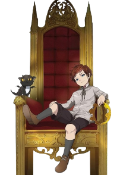

Explore o universo de Arthur Leywin.
Descubra personagens, volumes, continentes, raças e toda a história por trás de uma das novels mais populares da atualidade.

⚠️ Aviso de Spoilers: Este site contém informações sobre personagens, eventos, habilidades e volumes de The Beginning After the End. Caso ainda não esteja em dia com a obra, navegue por sua conta e risco.

Descubra personagens, volumes, continentes, raças e toda a história por trás de uma das novels mais populares da atualidade.
